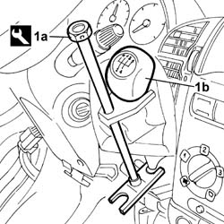
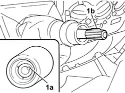

2125C24 GEAR LEVER KNOB - R + R
- Path
- Procedures > 21 GEARBOX UNIT > 2125 MANUAL GEARBOX EXTERNAL CONTROLS > 2125C MANUAL GEARBOX EXTERNAL CONTROL (CABLES) > 2125C24 GEAR LEVER KNOB - R + R
- Kind
- repair procedure (removal / refitting; the operation number is the code)
- Applies to
- all engines; all production periods
- Interactive page
- https://sloeber94.github.io/elrnDB-fDct/en/#/244001038
Applies to: all engines; all production periods
 Removing
Removing
 Refitting
RefittingOp. 7040A28 TRIM ON GEARBOX CONTROL PANEL - R.R.
1. Remove the gear lever grip (1b) using the tool (1a).
 | Description | Code | Function |
|---|---|---|---|
1a | Extractor | 1.870.668.000 | Gear lever grip extraction |

Applies to: all engines; all production periods
Refitting
Removing1. Fit the gear lever grip ensuring that the references (1a) and (1b) coincide.

Applies to: all engines; all production periods